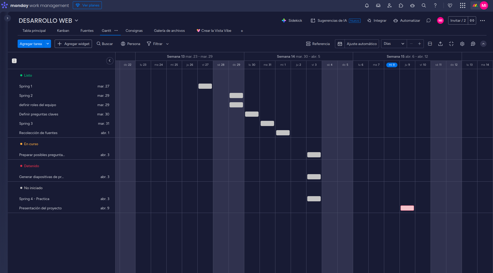
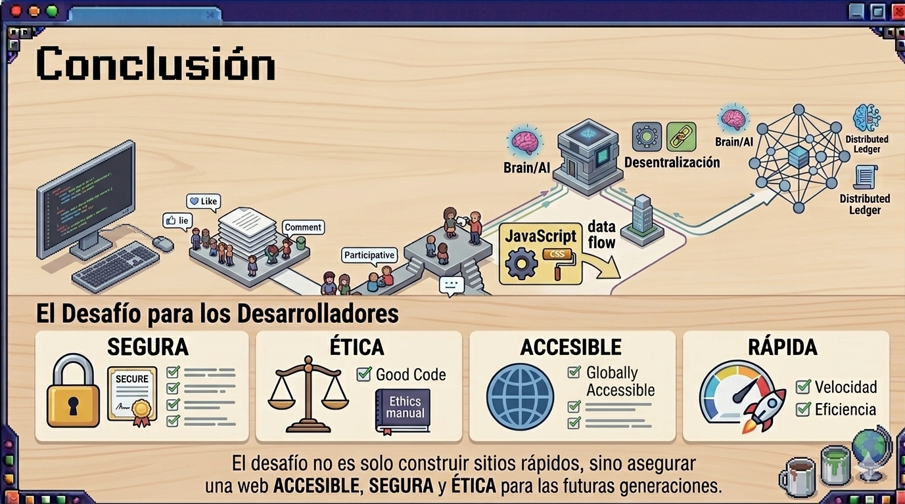

🚀 Integrantes 🚀
- VILLEGAS ELIAS
- QUEZADA YESICA
- ROMERO ISAIAS
- RICARDI SABRINA
- IBAÑEZ MARIO
📋 Qué realizamos 📋



🌟 Presentación 🌟


¿Qué es w3c y cual es su importancia en el desarrollo web?


¿Qué hace un desarrollador web?

¿Qué hace un desarrollador web?

¿Qué tipos de desarrolladores web hay?


¿Qué herramientas se utilizan en el desarrollo web?

"La Web tal como la conocemos es solo la punta del iceberg...
El potencial de lo que podemos construir sobre ella es
infinito".
Tim Berners-Lee
🗣️ Feedback 🗣️

⛲ Fuentes ⛲

Tim Berners-Lee
Sir Timothy John Berners-Lee, conocido como Tim Berners-Lee, es un ingeniero informático británico reconocido mundialmente por ser el inventor de la World Wide Web. Nacido en 1955, su visión y trabajo han revolucionado la forma en que accedemos a la información y nos comunicamos en la era digital.

W3C
El World Wide Web Consortium (W3C) es la principal organización internacional que desarrolla estándares para la web. Fundada en 1994 por Tim Berners-Lee, el inventor de la web, el W3C tiene como objetivo garantizar el crecimiento a largo plazo de la web mediante la creación de protocolos y pautas que aseguren su interoperabilidad y accesibilidad.

w3schools
W3Schools es un sitio web educativo que ofrece tutoriales y referencias sobre tecnologías web como HTML, CSS, JavaScript, SQL, Python, PHP, entre otros. Fundado en 1998, se ha convertido en una de las plataformas de aprendizaje en línea más populares para desarrolladores web de todos los niveles.

Seeburger Blog
El blog de Seeburger es una fuente de información y análisis sobre la evolución de Internet, desde sus inicios con Web 1.0 hasta las tendencias actuales como Web 3.0 y Web 4.0, así como el impacto del Internet de las cosas (IoT) en la conectividad y la digitalización.

SISE Blog
El blog de SISE es una fuente de información y análisis sobre el desarrollo web y sus aplicaciones en el mundo digital.

ThePower Blog
El blog de ThePower es una fuente de información y análisis sobre el rol del desarrollador web, sus habilidades, herramientas y oportunidades en la industria tecnológica.

Hostinger Blog
El blog de Hostinger es una fuente de información y análisis sobre el desarrollo de aplicaciones web y sus aplicaciones en el mundo digital.

TheBridge Blog
El blog de TheBridge es una fuente de información y análisis sobre el desarrollo de aplicaciones web y sus aplicaciones en el mundo digital.

UseIT Blog
El blog de UseIT es una fuente de información y análisis sobre el desarrollo de aplicaciones web y sus aplicaciones en el mundo digital.